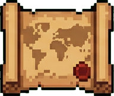
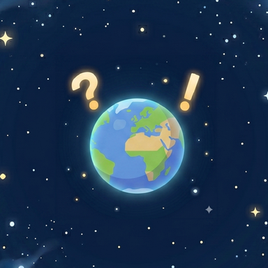
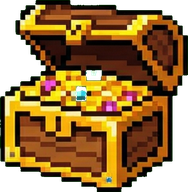
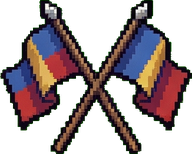
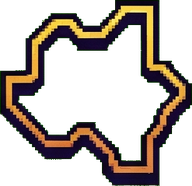
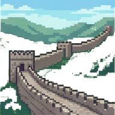
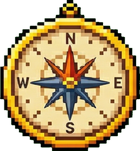
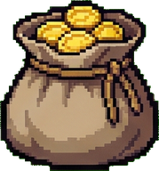
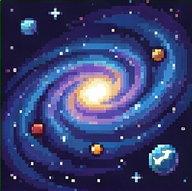
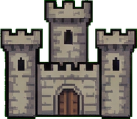

Claim the world
Use your rewards to claim countries on an interactive world map and build a growing empire.

Geo Conquest is a free geography quiz game for iOS and Android. Answer questions about flags, capitals, country shapes and borders, earn gold and XP, then claim real countries on an interactive world map.
Most geography apps stop at the quiz. Geo Conquest turns every correct answer into something you keep: gold that buys real countries on a world map you fill in, one border at a time. No ad ever interrupts a round — the only ones in the game are the ones you choose to watch for a bonus.

Use your rewards to claim countries on an interactive world map and build a growing empire.
Put your knowledge of flags, capitals, shapes and borders to the test in focused quiz challenges.
Earn gold and XP, complete achievements and quests, and unlock new ways to customize your profile.

Track your progress and see how your geography skills stack up on the global and daily leaderboards.
Every mode draws on the same world: 195 countries, their flags, capitals, silhouettes and neighbours. Pick the one that matches what you want to get better at.

Name the country from its national flag — the fastest way to start earning gold.
A gentler flag round built around more familiar countries, for players still learning the map.

Identify a country from its silhouette alone, with no flag, name or capital to help you.
Match capital cities to their countries, from the obvious ones to the ones that catch everybody out.

Spot the country that does not share a land border with the others. Harder than it sounds.

Hop from country to neighbouring country by name or capital, building a chain across the map.

A fifteen-question ladder for a grand gold and XP prize. Costs a ticket to enter — and nerve to finish.
The hardest questions in the game, with a gold penalty if you fail. Unlocks once you've proven yourself.

The endgame run, unlocked at level 75. Everything the game knows, back to back, for the biggest payout per answer.
Choose a challenge and prove what you know about the countries of the world.
Collect gold and XP as you solve questions and complete objectives. Perfect accuracy doubles your XP.
Spend your rewards to take countries and expand your territory on the map.
Keep learning, complete your collection and rise through the rankings.
Geo Conquest is a free geography quiz and strategy game for iOS and Android, made by BigBrain Global. You answer questions about national flags, capital cities, country shapes and land borders to earn gold and XP, then spend that gold to claim real countries on an interactive world map.
Yes. Geo Conquest is free to download and free to play on both iOS and Android. Every quiz mode, every country and the top of the leaderboard can be reached without spending money. There are optional in-app purchases, including gold packs and the Conqueror Pass subscription.
Ads never interrupt a quiz — there are no interstitials and no banners mid-game. Every ad in Geo Conquest is one you choose to watch, in exchange for something: double gold and XP on your next quiz, a refilled map when you have run out, an extra Millionaire ticket, or a second chance to continue a Millionaire run. Ignore all of them and the full game is still yours — they are there to speed you up, not to get in your way. Ads are served through Google AdMob; see the privacy policy for what that means for your data.
Yes. Quiz content is bundled with the app, so the quiz modes work without an internet connection. Sign in once, then keep playing offline. Progress syncs back up when you reconnect.
National flags, capital cities, country silhouettes and land borders. Dedicated modes cover each one, plus a Trail mode that chains neighbouring countries together, a fifteen-question Millionaire ladder, a high-difficulty Nightmare mode and the level 75 Gauntlet.
Answer quiz questions correctly to earn gold, then open the world map and spend that gold to claim a country. Each claimed country joins your empire and counts towards your share of the world's land.
Players are ranked by XP. There is an all-time leaderboard covering total XP earned, and a daily leaderboard covering XP earned since the daily reset. The player who finishes first on the daily board receives a gold and ticket reward.
The Conqueror Pass is an optional subscription that multiplies the gold and XP you earn, multiplies your daily login rewards and tickets, and unlocks subscriber-only avatars and premium quests. It changes how fast you progress, not what you can reach — every country and the top rank are achievable without it.
The Capitals Quiz and the Borders Quiz are unlocked by buying their upgrades in the in-game Shop, under Upgrades. The Trail Quiz unlocks at player level 40, and The Gauntlet — the endgame mode — unlocks at level 75.
Yes. Sign in with the same account on either platform and your countries, gold, XP and level carry over.
Use the official Apple App Store and Google Play links. They take you directly to the Geo Conquest listing for your device.

Download Geo Conquest and turn world knowledge into a map you can call your own.